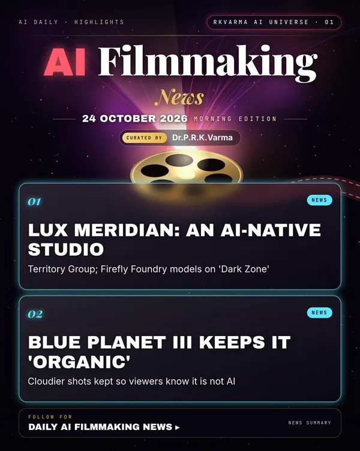

AI Filmmaking
Project page →1 minMore research papers in this category today → 1
Film and TV are splitting into two camps: new AI-native studios and funding rounds on one side, and makers who prove their footage is real on the other.
Research, industry & policy
- Territory Group launches AI-native studio Lux Meridian, AWN · 23 Oct 2026: The design firm behind many screen graphics has set up a film and TV studio built around AI, and says custom Adobe Firefly Foundry models were used on Brad Peyton's project 'Dark Zone'.New today
- Nvidia and TCV invest in Higgsfield, Variety · 23 Oct 2026: The generative video start-up has extended its Series B round, bringing in Nvidia and the growth investor TCV.New today
- Blue Planet III keeps cloudier footage to show it is real, The Guardian · 24 Oct 2026: The BBC series deliberately kept murkier, natural-looking shots so viewers can trust that the animals are not AI-generated; it also used what is described as the first underwater CCTV camera disguised as a stonefish.New today
Why it matters
As synthetic video gets cheaper, proof of authenticity becomes part of a film's value, alongside the new AI studios.


Was this section useful?